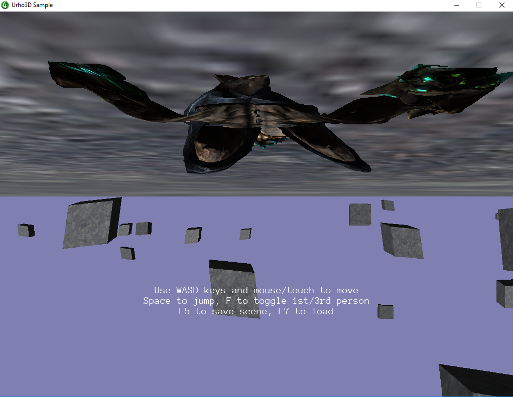

NinjaPangolin
I used MinGW from
Stephan Lavavej’s site
to compile Urho3D on Windows 7 and it worked just fine. Now I’ve updated to Windows 10 and successfully compiled the lib. Used default options (OpenGL renderer) with
cmake_mingw.bat build -DMINGW_SYSROOT=C:\MinGW
. 2D samples works fine, but 3D ones do not. Here’s how 13_CharacterDemo.exe looks like:

It’s upside-down, model is squashed and moving the mouse causes it to be stretched into infinity. What is going on here?